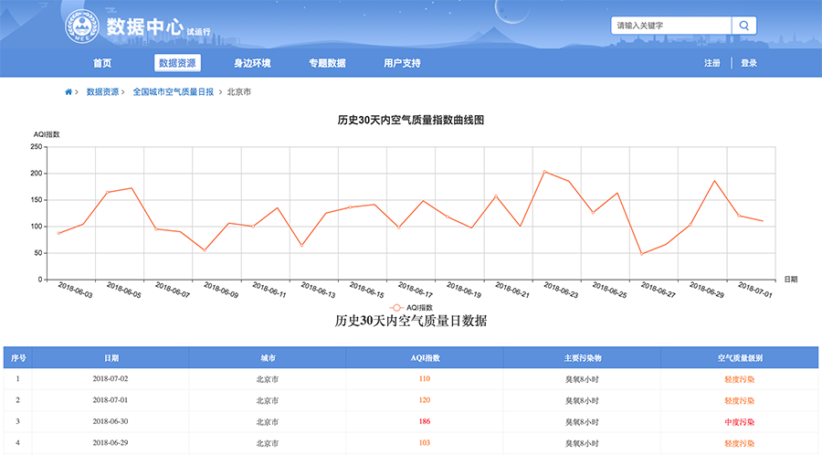
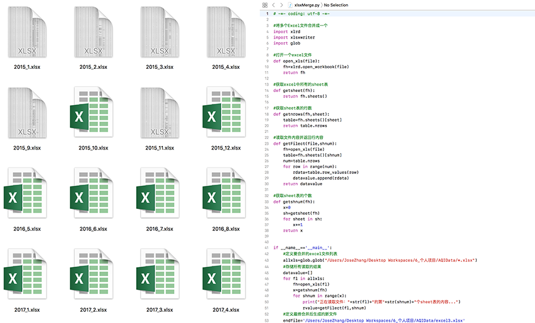
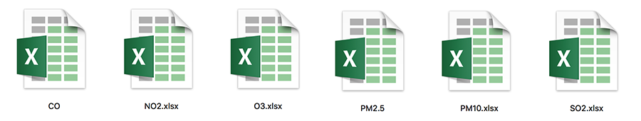
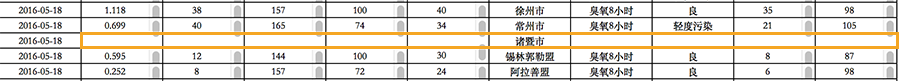
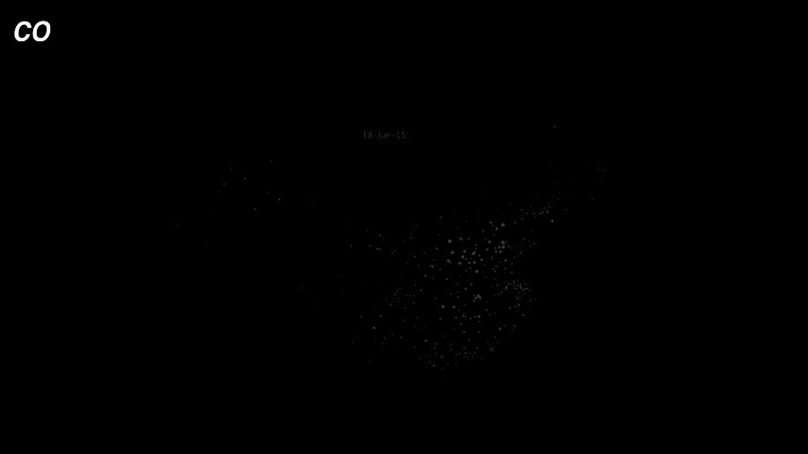
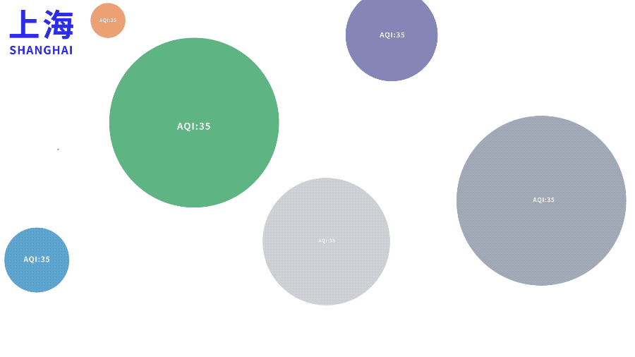
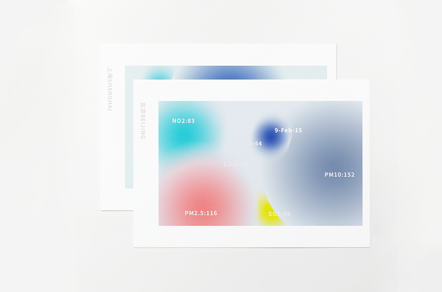
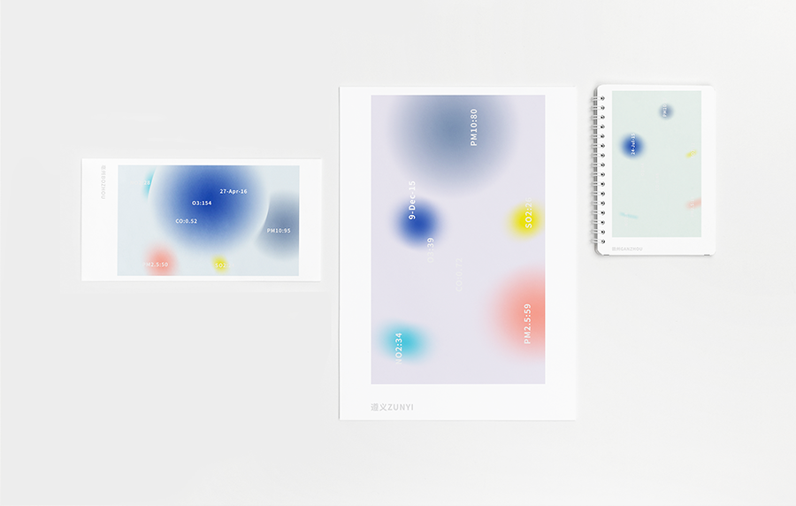

City Breath
Data Visualization, Motion Design
Personal Project
2018.6
Personal Project
2018.6
This is a project I did for China VISAP'18 Art Program with two friends. My main role in this project is data collecting, data mining, data visualization and motion design.
At first I found Air Quality Index(AQI) data of most cities in China in the data center website of Ministry of Ecology and Environment of China.

At first I found Air Quality Index(AQI) data of most cities in China in the data center website of Ministry of Ecology and Environment of China.
I dowloaded data from Jan 2015 to May 2018. They are separately dowloaded in the max length of 1 month. So I tried to write a python script to merge them together.

AQI is calculated according to five major air pollutants: ground-level ozone, particle pollution (also known as particulate matter), carbon monoxide, sulfur dioxide, and nitrogen dioxide. For each of these pollutants, I made an individual file for further visualization.

However, at this stage, I found many blanks in the excel file because of the lack of data recording in some cities.

So I tried to use Panda library to fill them, but I was new to Python and didn't get it work. So my teacher and friend help me with this. In the meantime, we collected latitude and longitude data of each city.
Then it came the most difficult part. The cities'name in the two files didn't perfectly match. So I used tableau to connect two files with the "name" column, and found out the differences and fixed them by hand.
At this stage, I managed to plot the data using processing.

Then it came the most difficult part. The cities'name in the two files didn't perfectly match. So I used tableau to connect two files with the "name" column, and found out the differences and fixed them by hand.
At this stage, I managed to plot the data using processing.
Finally it came our design part. All of us need to breathe, and AQI data shows the quality of city's breath. When we are introducing a city to friends, we always show them Polaroids we take with the beautiful scenery or delicious food. But we often ignore that the air is also an important characteristic of the city. So why not design a set of postcards or Polaroids for cities using their AQI data?
It occurred to me that AE cc2018 had support for data-driven animation. So I converted the files into json and used AE script to do some experiments.

It occurred to me that AE cc2018 had support for data-driven animation. So I converted the files into json and used AE script to do some experiments.
Below is our final output.

